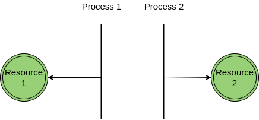
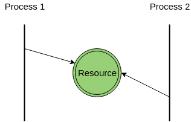
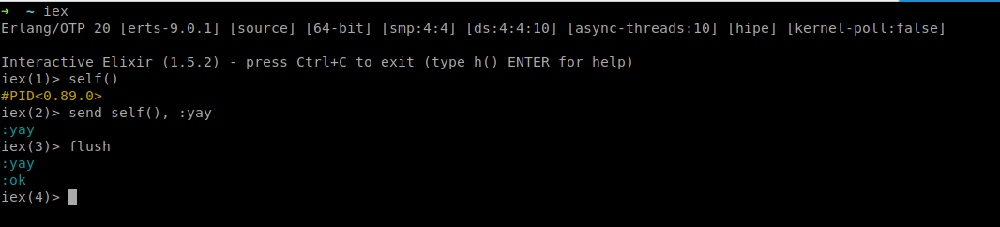

The Actor Model
@Cuwano
Created: 2017-11-28 Tue 00:01
Concurrency and Parallelism
What's all this?
Parallelism
Is basically processing things at the same time.

Concurrency
Process multiple things with a common resource.

What can an Actor do?
- Receive messages
- Sends messages
- Change its own behavior
- Create more Actors
Actor System

Mailbox
This means that it can only process one message at a time
What do you mean by "changing its own behavior"?
Let's see an example!
Everything in Elixir/Erlang is an Actor
So let's create an Actor!

What's all this?!
&spawn/1
spawn(fn -> :ok end)
spawn(fn -> IO.puts "Patata" end)
Creates a process that executes a given function
receive
receive do
{pid, :ping} -> send(pid, :pong)
end
&send/2
# send(who, what)
send(pid, :hello)
send(pid, {self(), :ping})
&flush/0
Let's see our inbox

iex is an Actor too!!

EVERYTHING IS AN ACTOR!
That means that we can message anything!
The only thing that we need is a "mailbox direction" aka THE PROCESS ID
(epic voice here)
So… a more interesting process
(@Cuwano swap to Emacs)
Let's play with this little friend here!
First of all there is a &start/0 function that rings a bell
def start() do
pid = spawn(&loop/0)
{:ok, pid}
end
&loop/0 function
This function has a receive in it
def loop() do
receive do
{pid, :ping} ->
send pid, :pong
loop()
{pid, :stop} ->
send pid, "Okkay I'll stop"
{pid, :plox_mutate} ->
send pid, "ROAR!"
loop2()
{pid, _} ->
send pid, {self(), "Dude..."}
loop()
_ -> loop()
end
end
Some real stuff!
Metex!!
(@Cuwano swap again, but now to the Metex thing)
Moar examples
@daily_list_bot ♥